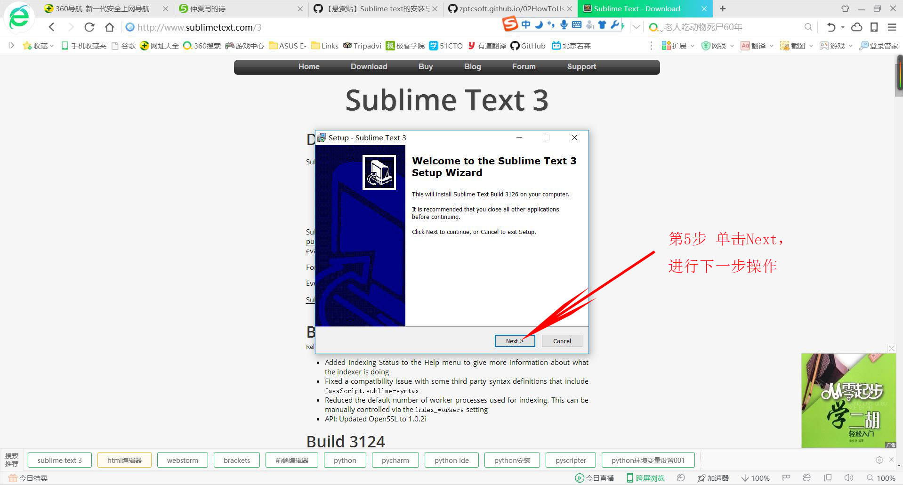
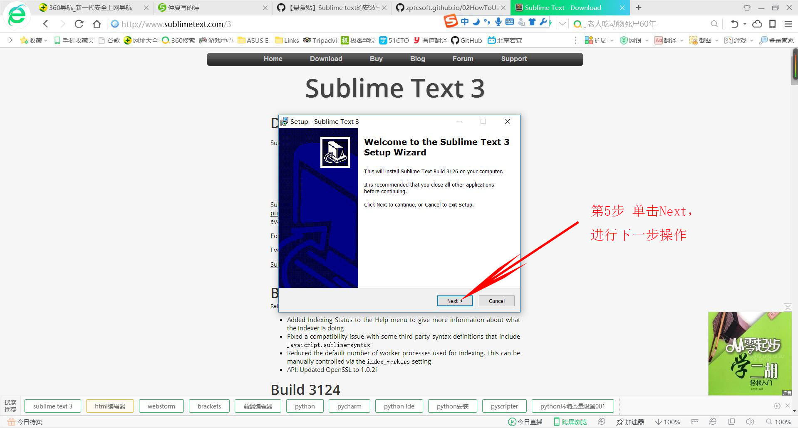
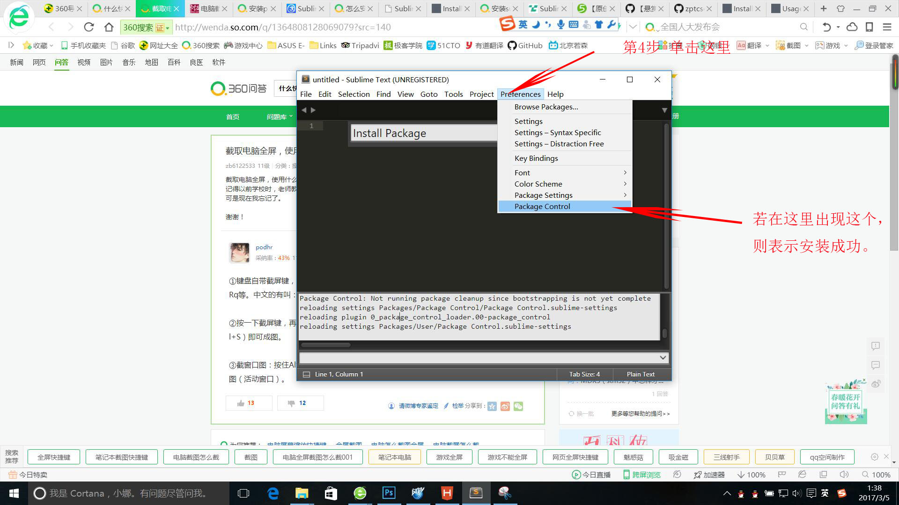
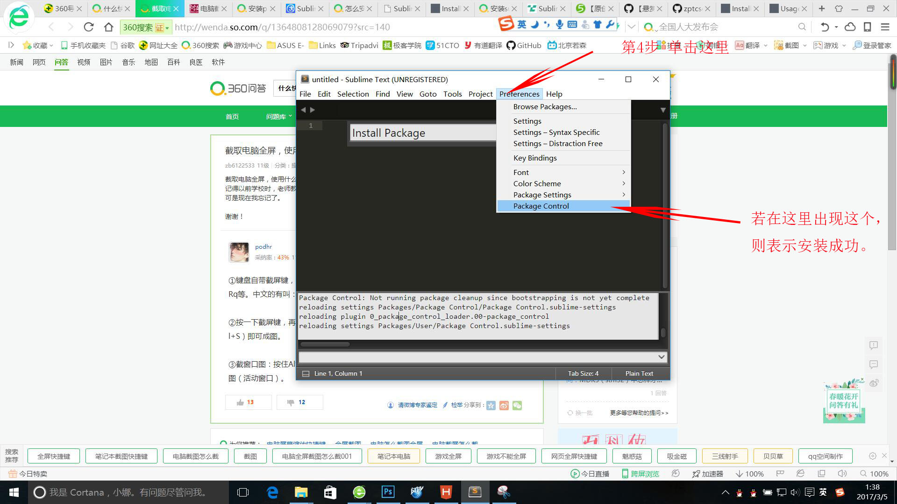
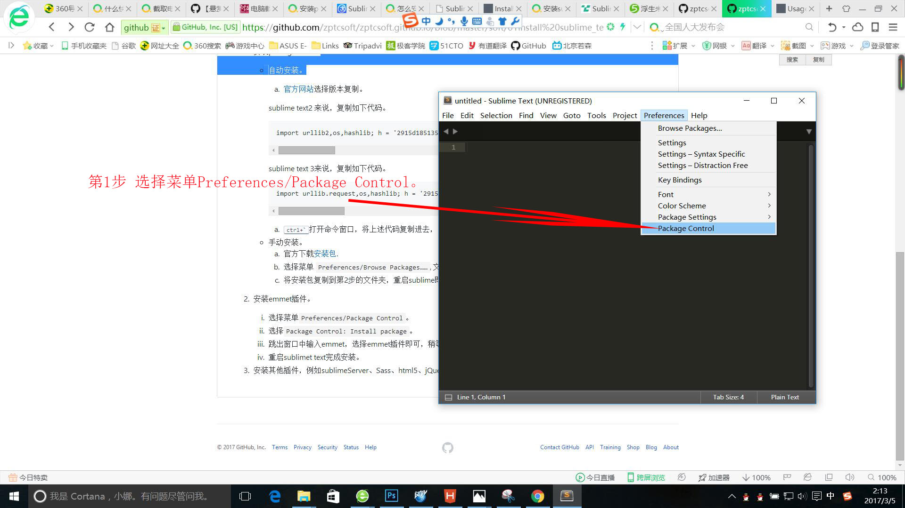
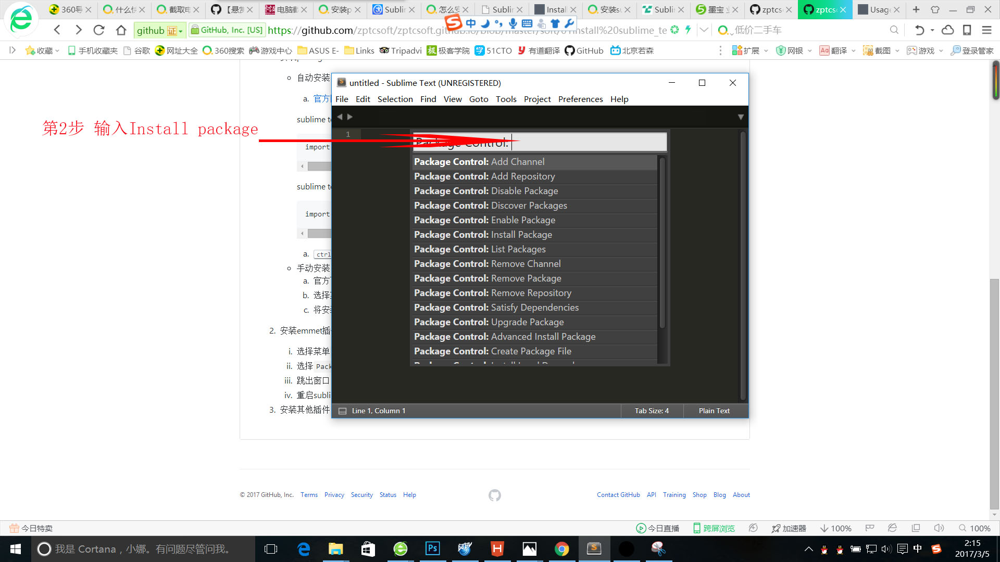
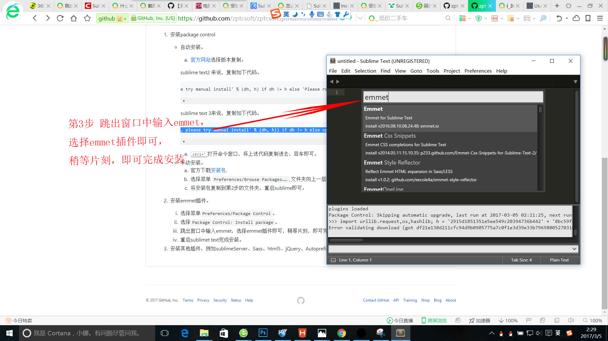

首先按 Ctrl + ~组合键，打开Console窗口；

输入以下代码：
import urllib.request,os,hashlib; h = ‘2915d1851351e5ee549c20394736b442’ + ‘8bc59f460fa1548d1514676163dafc88’; pf = ‘Package Control.sublime-package’; ipp = sublime.installed_packages_path(); urllib.request.install_opener( urllib.request.build_opener( urllib.request.ProxyHandler()) ); by = urllib.request.urlopen( ‘http://packagecontrol.io/’ + pf.replace(‘ ‘, ‘%20’)).read(); dh = hashlib.sha256(by).hexdigest(); print(‘Error validating download (got %s instead of %s), please try manual install’ % (dh, h)) if dh != h else open(os.path.join( ipp, pf), ‘wb’ ).write(by)
然后回车安装，安装完了之后重启软件即可。
 

选择菜单Preferences/Package Control。
选择Package Control: Install package。

跳出窗口中输入emmet，选择emmet插件即可，稍等片刻，即可完成安装。

安装其他插件，例如sublimeServer、Sass、html5、jQuery、Autoprefixer等。